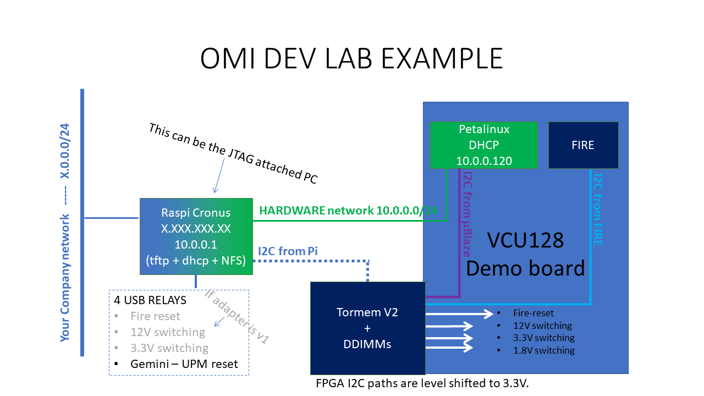
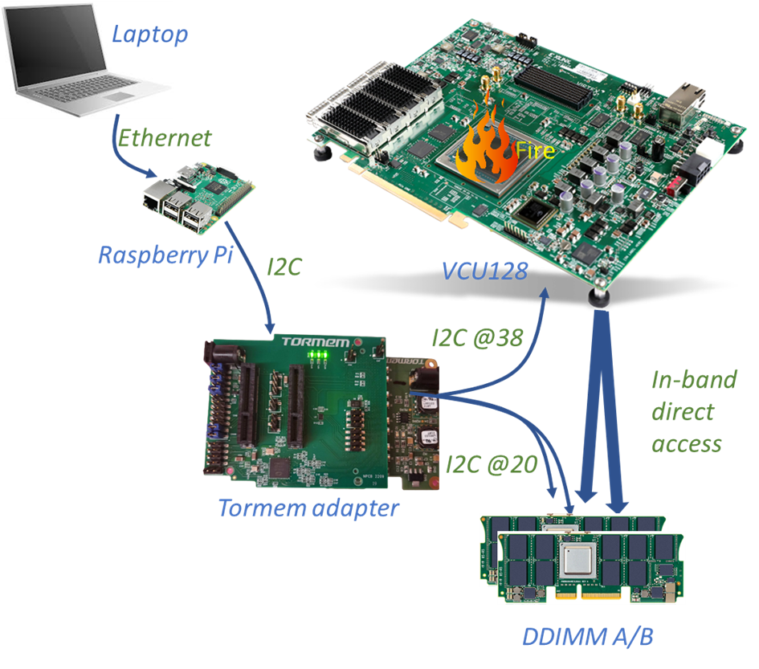
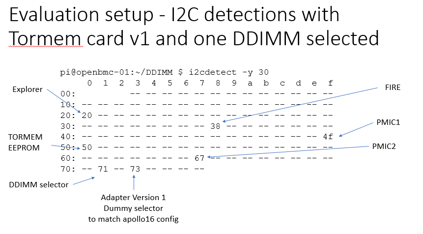
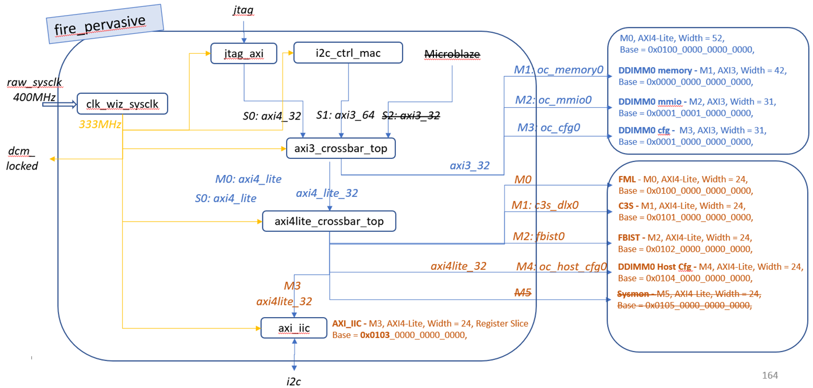

OMI ENABLEMENT Guide
HARDWARE DESCRIPTION
For the purpose of open sourcing the design, a collaboration between OMI members led to a tuning of an OMIhost FPGA reference design "Fire" to be used in a VCU128 Card from AMD/Xilinx.
With addition of a simple FMC+ connected add-on card, any OMI compatible memory DDIMM module can be evaluated.

The setup allows evaluation of 2 DDIMMs modules in slots A and B.
Some code is required to synchronize and test the OMI DDIMMs.
Enablement example codes have been developed in Python and in C. Same functions are available.
Either the code is executed in a companion raspberry pi or any I2C capable computer, or even in an embedded microblaze processor (in the latter case use the C version as it executes much faster)
Python source code is available at : Python Code
Python code documentation is available at : Python Documentation
C source code is available at : C Code
C code documentation is available at : C Documentation
Enablement example code
- Checks I2C tree
- Synchronizes DDIMMs
- Executes simple transfers in memory (not published yet)
Note: The Raspberry pi can host an Cronus server, should you want to evaluate OMI in a Cronus environment.
REQUIREMENTS
Requirements depends on what kind of experiments need to be conducted.
- Cronus with a raspberry pi hosting a Cronus server and dealing with I2C accesses (out of present scope)
- Standalone Python or C code running on Raspberry Pi or a PC with I2C capabilities
- Embedded PetaLinux with Microblaze next to Fire in the FPGA
- requires TFTP / NFS / DNS server to host boot and file system
- can run C standalone code (Python is too slow to execute in a timely manner)
- Standalone C code running on a no-OS Microblaze embedded processor (not developed yet)
- only requires a serial terminal (can be "picocom" using UART through programming USB cable)
Minimum Hardware requirements :
Procure the following:
- A VCU128 Board from AMD/Xilinx and a JTAG controlling PC (can be the Raspberry pi)
- An adapter board from Tormem.
- as of today only V1 is available
- Version 1 allows basic DDIMM interface
- Version 2 will also allow FIRE reset and power control of 12V, 3.3V and 1.8V.
- At least one DDIMM module
- A USB relay card to ensure automated fire reset / 3.3V / 12V POWER control (if using an adapter board version 1)
Software requirements :
- Obtain an AMD/Xilinx Licence for Vivado. Requires 2018.3 version for this contribution (best timing results at maximum bandwidth).

ENABLEMENT STEPS with an external I2C master
git clone the "vcu128_enablement" branch of Fire design.
First synthetize, implement and generate bitstream of "FIRE" design for the VCU128 using the specific branch as specified in the README.md file.
git clone the https://github.com/OpenCAPI/omi_enablement/ and use /python or /c directory with a debugging raspberry pi or any computer with I2C capability to check you can see the design.
Choose Python or C control, both will send requests through the I2C bus to the Fire design. Explorer chip are usually access through In band commands are dealt by Fire.
ENABLEMENT STEPS with internal Microblaze as I2C master
When using Tormem adapter board version 1, I2C control by Microblaze requires a hacking of the VCU128 board as there is no provision to connect an external cable.
-
git clone the "vcu128_enablement" branch of Fire design.
-
First synthetize, implement and generate bitstream of "FIRE" design for the VCU128 using the specific branch as specified in the README.md file.
-
To prepare the integration of FIRE and microblaze structure, generate an IP of Fire design.
-
Git clone the "omi_enablement" to get the necessary material to build a {Fire + Microblaze} structure.
-
Hardware: Option 1 : re-create your own design {FIRE + Microblaze}
-
From the "hw/" directory, use hw_script.sh and tcl_code.tcl to generate a microblaze environment. you'll be ask to provide the FIRE ip path from step 3.
- you'll get the .xsa file which is the only file required for the remaining steps. It contains a complete description of the hardware.
-
Hardware Option 2: use pre-built hardware system.bit.
-
Install petalinux (we used the 2021.1 version)
-
Software Option 1: create your petalinux environment
-
using petalinux-create, create a
vcuomiproject directory.petalinux-create --type project --template microblaze --name vcuomi - remaining tasks: To Be described
-
...
-
Software Option 2: Use pre_built linux
-
Use https://github.com/OpenCAPI/omi_enablement/tree/main/petalinux content
-
run the script.sh
-
and then
wsl@wsl:~/omi_enablement/petalinux$ petalinux-create --type project -s *.bsp
wsl@wsl:~/omi_enablement/petalinux$ mkdir vcuomi/images && mkdir vcuomi/images/linux
wsl@wsl:~/omi_enablement/petalinux$ cp -r linux/images/* vcuomi/images/linux/.
-
copy the
images/linuxcontent to your tftp directory of the remote computer acting as a server. -
From the remote tftp/NFS server: copy the tftp/rootfs.tar.gz directory to your NFS directory.
-
Adjust permissions accordingly.
-
From
petalinuxinstallation dir usexsct -nolrwrapto load the system.bit into the fpga. -
open a picocom or any RS232 terminal on the FPGA RS232 link.
-
trigger a boot of the microblaze with petalinux-boot.
I2C architecture foreword
I2C is either used in a traditional manner, ie Master issues a R or W to a I2C chip adress. The addressed chip also provides an internal register address.
That's the case for EEPROM, PMIC (Power Managment IC), I2C muxes etc ..
As far as FIRE and EXPLORER are concerned, they are accessed using different modes depending on which register is concerned.
Internal registers are accessed through an indirect mecanism, and inband is possible for devices, hence this documentation.
I2C tree

I2C components
- Master: Raspberry pi or any I2C capable computer
- Host component from Apollo or VCU128 board containing a FPGA with a FIRE host design at @0x38
- For each DDIMM :
- DDIMM EEPROM containing VPD data at I2C@0x50
- PMIC1 and PMIC2 (Power Management Integrated Circuits) setting the Power supplied of the board at @0x4F and @0x67
- OMI DDIMM OCMB (OpenCAPI Memory Buffer also called Explorer) at @0x20
Reset and power supply control
DDIMM Exporer reset signal is controlled through an FMC+ connector lane and a FIRE FML register, while FIRE reset is required with an external logic. This logic can be easyly performed with a set of USB controlled electromechanical relays hooked up to the controlling computer.
The same relay board an control power supplies through the adapter power supply connector.
Each development lab need to tune this signals to allow resetting FIRE and switch on and off power supplies at any time.
Specific DDIMM I2C path
Tormem adapter board can have up to 2 devices. Each of them can be accessed through I2C using a multiplexer switch.
After a power on and Fire reset:
Select the proper DDIMM I2C path (set the adapter mux accordingly)
~/vcu128_ctl_sh/i2c_reset.sh ; python3 omi.py initpath -d a
To check with mux is selected, use the following command:
python3 omi.py checkpath`
Once Path is set, the init routine will power on the 2 DDIMM PMICS. No DDIMM selection, as it will power on the currently selected DDIMM.
python3 omi.py init
Once I2C path is set and DDIM is powered on, we can list the viewable devices using Adapter version 1:

Typically, you will identify the FIRE host as @0x38, the OMI DDIMM device as @0x20, the EEPROM as @0x50, the 2 PMIC as @0x4F and 0x67 and the different muxes at @0x71 and 0x73 from the Adapter board.
FIRE I2C is a slave component set with 0x38 as I2C address. This FIRE I2C provides access to all address mapping from the host side as well as from the device sides.
After a reset of the Xilinx AXI-IIC IP initialization of the IP is preformed as follow:
- Soft reset (SOFTR @040)
- Slave Mode Select (CR @100)
- Enable AIX IIC controller (CR @100)
- Set I2C slave address to 0x38 (ADDR @110)
- Set an irq if fifo is full (16 locations filled) (RX_FIFO_PIRQ @120) The I2C protocol is not used as the typical one, meaning that any I2C access (either “read” or “write”) fills the I2C Rx FIFO with almost 1 word. The state machine associated to this I2C IP (i2c_ctrl_mac) is polling indefinitely the I2C IP (axi_iic). As soon as it detects that the Rx FIFO is not empty then 8x8bits words are read (even if only 1 byte was written). Afterwards if the FIFO is empty, it means that the access is a “read”, otherwise the logic will read another 8x8bits words while considering the operation as a “write”. To summarize:
- 8x I2C 8bits-words received corresponds to a FIRE register address to read.
- 16x I2C 8bits-words received corresponds to the FIRE register address and the data to write
- Read or write of 1 word will generate a “decode1c” response (generated by the AXI bridges) written to the I2C FIFO
- As soon as a word is written in the I2C IP at @0x38, then “i2c_ctrl_mac” picks the data as an address and accesses the appropriate component. If required access is a “read”, then the data collected from the component is written to the axi_iix TX fifo. If the required access is a “write”, then the data is read by the “i2c_ctrl_mac” and sent to the appropriate component.

Host / FIRE memory mapping and Access
a. Memory mapping The host offers 2 types of accesses.
First of them deals with its own internal registers. Most used among them are:
- FML (FIRE Miscellaneous Library) containing mainly the Fire version and the reset of the devices
- C3S (OpenCAPI Command and Configure Sequencer) used to manually create an OMI frame (called flit)
- FBIST (Function Built-In Self Test) used to automatically generate and check high bandwidth traffic on the OMI links.
The host can also access all memory mapping of the DDIMM devices (up to 4 devices)

Table 1: FIRE memory space
Example of FIRE internal register
i. Read FIRE_VERSION at @0x00 of FML register
python3 omi.py read -c fire -r 0x100000000000000
Rd Fire Addr 0x100000000000000 : 0x000000003e29c7d2
This register contains
- [31:29]: ‘001’: frequency used for the internal clock of the FPGA which determines the OMI link frequency [ 1= 21.33 GBPS, 2 =23.46 GBPS, 3=25.6 GBPS]
- [28]: ‘1’: dirty bit is used when the current image contains change not committed to the git version control
- [27:0]: ‘29c7d2’ is the git level of the code
ii. Reset/unreset the DDIMM0 device
Reseting the DDIMMs is performed by the host.
python3 omi.py read -c fire -r 0x100000000000004
Rd Fire Addr 0x100000000000004 : 0x000000000000003f
Reset the DDIMM0 (bit3)
python3 omi.py write -c fire -r 0x100000000000004 -d 000000037
Wr Fire Addr 0x100000000000004 : 0x0000000000000037
Writing check : Success
python3 omi.py write -c fire -r 0x100000000000004 -d 000000037
Wr Fire Addr 0x100000000000004 : 0x000000000000003f
Writing check : Success
iii. Bad address access
As soon as a bad i2C address is accessed, you may encounter one of the 2 different types of answer (with different severity):
The answer “dec0de1c” will be sent by AMD/Xilinx axi crossbar as an answer to an unknown address (out of range)
python3 omi.py read -c fire -r 0x1000F0000000004
Rd Fire Addr 0x1000f0000000004 : 0x00000000dec0de1c
The answer “dec0deff” will be sent as an answer to address that is not modulo 4.
~/python/v6 $ python3 omi.py read -c fire -r 0x100000000000000
Rd Fire Addr 0x100000000000000 : 0x00000000335b5587
~/python/v6 $ python3 omi.py read -c fire -r 0x100000000000001
Rd Fire Addr 0x100000000000001 : 0x00000000dec0deff
~/python/v6 $ python3 omi.py read -c fire -r 0x100000000000002
Rd Fire Addr 0x100000000000002 : 0x00000000dec0deff
~/python/v6 $ python3 omi.py read -c fire -r 0x100000000000003
Rd Fire Addr 0x100000000000003 : 0x00000000dec0deff
~/python/v6 $ python3 omi.py read -c fire -r 0x100000000000004
Rd Fire Addr 0x100000000000004 : 0x000000000000003f
In the event you have modified the hdl design and not properly taken care of a memory range, an I2C error will be raised, and a reset of the fire chip will be needed if you access a bad address in an unallowed range!
python3 omi.py read -c fire -r 0xin range but not answering address
OSError: [Errno 5] Input/output error
When this occurs a reset of the chip is required.
OMI DDIMM OCMB memory mapping and access
Contact Microchip support to obtain detailed information on firmware
a. Memory mapping
An EXPLORER register can be accessed in two ways:
- Directly through I2C. The user will need to select the port of the DDIMM to switch the I2C path to the EXPLORER he wants to access
- Indirectly through FIRE. The OMI links between FIRE and EXPLORER need to be trained to use the “in-band” access. To select the EXPLORER he wants to access, the user will use a specific address depending on the port number.
Each EXPLORER register can be accessed through different addresses.
The reference used is the Microchip "Explorer_registers_Mips_view.pdf" document.
The 0x808xxxx registers are ordered by pair but can be accessed alone or by pair.
As an example, let’s access the register 0x8084168: OCMB - MB_SIM_MMIO_OTRCFG76_LEFT and 0x808416C: OCMB - MB_SIM_MMIO_OTRCFG76_RIGHT.
They can be accessed either by their « register address », by their « SCOM address », by their « MMIO address » or by their « FIRE adress »:
- Register Address : @0x08084168 and @0x0808416C (32 bits access)
- I2C Register Address : @0xA8084168 and @0xA808416C (32 bits access)
- SCOM Address: Reg@0x8084168/C >> 3 => SCOM@ 0x801082D (64 bits access)
- MMIO Address: Reg@8084168/C => MMIO@ @0026C/8 (32 bits access)
- FIRE Address: => 0x3001000140084168 (64 bits access)
To access different slots through FIRE, use the appropriate offset:
- DDIM_0_CFG / Port A: 0x3001_0001_4008_4168
- DDIM_1_CFG / Port B: 0x3001_0401_4008_4168
b. Registers access
i. I2C access (at any time and directly in explorer chip)
tututututttuDDIMM / Port is selected by the I2C switch on the Tormem adapter board
python3 omi.py initpath -d a #(done once to select the right OMI DDIMM / Port)
MB_SIM_MMIO_OTRCFG76_LEFT + MB_SIM_MMIO_OTRCFG76_RIGHT 64 bits Read SCOM@ @801082D => 0x0000000f_00000000
python3 omi.py read -c exp -r 0801082D => 0x0000000f00000000
64 bits Write SCOM@ @801082D => 0x000000ff_00000000 python3 omi.py write -c exp -r 0801082D -d 0x0000ff00000000
MB_SIM_MMIO_OTRCFG76_LEFT => Reg @0x8084168 I2C Reg @0xA8084168 = SCOM @0801082D 32 bits Read Reg@ @0x8084168 => 0000000F
python3 omi.py readreg -c exp -r 0x8084168 =>0x0000000F 32 bits Write Reg@ @0x8084168 => 000000FF (always start by lower address pair and then upper address pair)
python3 omi.py writereg -c exp -r 0x8084168 -d 0x000000FF
MB_SIM_MMIO_OTRCFG76_RIGHT => Reg @0x808416C = I2C Reg @0xA808416C = SCOM @0801082D 32 bits Read Reg@ @0x808416C => 00000000
python3 omi.py readreg -c exp -r 0x808416C => 0x00000000
32 bits Write Reg@ @0x808416C => 000000AA (always start by lower address pair and then upper address pair) python3 omi.py writereg -c exp -r 0x808416C -d 0x000000AA
ii. In-Band access using the FIRE DDIMM_0 MMIO register address
(access is done through FIRE only after OMI Links are trained) DDIMM / Port is selected by the address used
DDIM_0_MMIO / Port A: 0x3001_0001_4008_4168
DDIM_1_MMIO / Port B: 0x3001_0401_4008_4168 MB_SIM_MMIO_O0MBIT_O0DID_LEFT + MB_SIM_MMIO_O0MBIT_O0DID_RIGHT 64 bits Read Reg@ @08084168 => 0x00000f_00000000
64 bits Write Reg@ @08084168 => 0x0000ff_00000000
python3 omi.py read -c fire -r 0x3001000140084168 => 0x0000000f00000000
64 bits Write Reg@ @08084168 => 0x0000ff_00000000
MB_SIM_MMIO_OTRCFG76_LEFT => MMIO @0026C = Reg @0x8084168 = SCOM @0801082D 32 bits Read MMIO@ @0026C => 0000000F
32 bits Write MMIO@ @0026C => 000000FF
python3 omi.py read -c fire -r 0x200100000000026c => 0x000000000000000f
32 bits Write MMIO@ @0026C => 000000FF
python3 omi.py write -c fire -r 0x3001000140084168 -d 0x000000ff00000000
MB_SIM_MMIO_OTRCFG76_LEFT => MMIO @0026C = Reg @0x8084168 = SCOM @0801082D 32 bits Read MMIO@ @0026C => 0000000F python3 omi.py read -c fire -r 0x200100000000026c => 0x000000000000000f 32 bits Write MMIO@ @0026C => 000000FF
MB_SIM_MMIO_OTRCFG76_RIGHT => MMIO @00268 = Reg @0x808416C = SCOM @0801082D 32 bits Read MMIO@ @00268 => 00000000
python3 omi.py write -c fire -r 0x200100000000026c -d 0x000000ff
MB_SIM_MMIO_OTRCFG76_RIGHT => MMIO @00268 = Reg @0x808416C = SCOM @0801082D 32 bits Read MMIO@ @00268 => 00000000
32 bits Write MMIO@ @00268 => 00000000
python3 omi.py read -c fire -r 0x2001000000000268 => 0x0000000000000000
32 bits Write MMIO@ @00268 => 00000000
Notice the address swap with 32 bits access! MMIO @0026C => Reg @0x8084168
python3 omi.py write -c fire -r 0x2001000000000268 -d 0x00000000
Notice the address swap with 32 bits access! MMIO @0026C => Reg @0x8084168
iii. In-Band access using C3S to manually build a Flit
(access is done through Fire only after OMI Links are trained) Pre-requisite => Only allow template 0
32 bits Read MMIO@ @0026C => FADAFAAB Control array => C3S RESP WRITE ADDR RESET
python3 omi.py read -c fire -r 0x2001000000000224 => 0x00000221
python3 omi.py write -c fire -r 0x2001000000000224 -d 0x00000001
32 bits Read MMIO@ @0026C => FADAFAAB Control array => C3S RESP WRITE ADDR RESET
Data array
python3 omi.py write -c fire -r 0x0101000000030004 -d 0x0000000000000200
Data array
Flow Array
python3 omi.py write -c fire -r 0x010100000000000E -d 0x0000000000000000
python3 omi.py write -c fire -r 0x0101000000000006 -d 0x0000000040000000
python3 omi.py write -c fire -r 0x0101000000000005 -d 0x0000000000000000
python3 omi.py write -c fire -r 0x0101000000000004 -d 0x000000000026C000
python3 omi.py write -c fire -r 0x0101000000000003 -d 0x0000000000E00000
Flow Array
Control Array
python3 omi.py write -c fire -r 0x0101000000020000 -d 0x0000000080000001
python3 omi.py write -c fire -r 0x0101000000020100 -d 0x0000000000000100
Control Array
Response Array to access 0x26C~64/4=B, read 1020B
python3 omi.py read -c fire -r 0x0101000000030000 => 0x0000000000000008
python3 omi.py write -c fire -r 0x0101000000030000 -d 0x0000000000000009
python3 omi.py read -c fire -r 0x0101000000030000 => 0x0000000000000008
python3 omi.py read -c fire -r 0x0101000000030000 => 0x0000000000000008
python3 omi.py write -c fire -r 0x0101000000030000 -d 0x000000000000000A
Response Array to access 0x26C~64/4=B, read 1020B
32 bits Write MMIO@ @0026C => ABCDEFAA
python3 omi.py read -c fire -r 0x010100000001020B => 0x00000000FADAFAAB
32 bits Write MMIO@ @0026C => ABCDEFAA
Flow Array
Data Array
python3 omi.py write -c fire -r 0x010100000000000E -d 0x0000000000000001
python3 omi.py write -c fire -r 0x0101000000000006 -d 0x0000000040000000
python3 omi.py write -c fire -r 0x0101000000000005 -d 0x0000000000000000
python3 omi.py write -c fire -r 0x0101000000000004 -d 0x000000000026C000
python3 omi.py write -c fire -r 0x0101000000000003 -d 0x0000000000E10000
Flow Array
Control Array
python3 omi.py write -c fire -r 0x0101000000020000 -d 0x0000000080000001
python3 omi.py write -c fire -r 0x010100000000010B -d 0x00000000ABCDEFAA
python3 omi.py write -c fire -r 0x0101000000020100 -d 0x0000000080000002
python3 omi.py write -c fire -r 0x0101000000020200 -d 0x0000000080000003
python3 omi.py write -c fire -r 0x0101000000020300 -d 0x0000000000000100
Control Array
Reassign default value for supported templates python3 omi.py write -c fire -r 0x2001000000000224 -d 0x00000221
python3 omi.py read -c fire -r 0x0101000000030000 => 0x0000000000000008
python3 omi.py write -c fire -r 0x0101000000030000 -d 0x0000000000000009
python3 omi.py read -c fire -r 0x0101000000030000 => 0x0000000000000008
python3 omi.py read -c fire -r 0x0101000000030000 => 0x0000000000000008
python3 omi.py write -c fire -r 0x0101000000030000 -d 0x000000000000000A
Reassign default value for supported templates python3 omi.py write -c fire -r 0x2001000000000224 -d 0x00000221